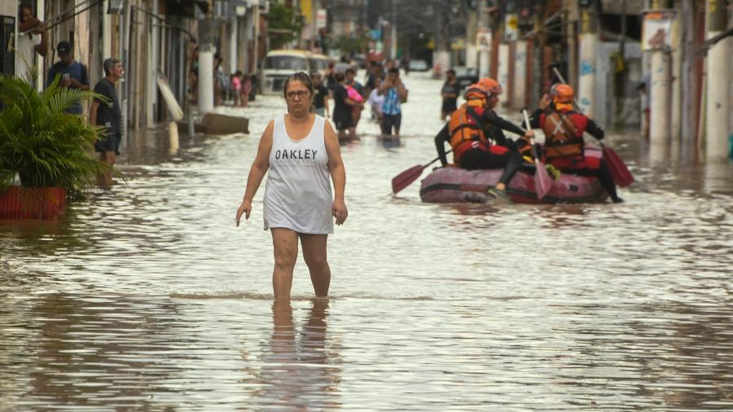
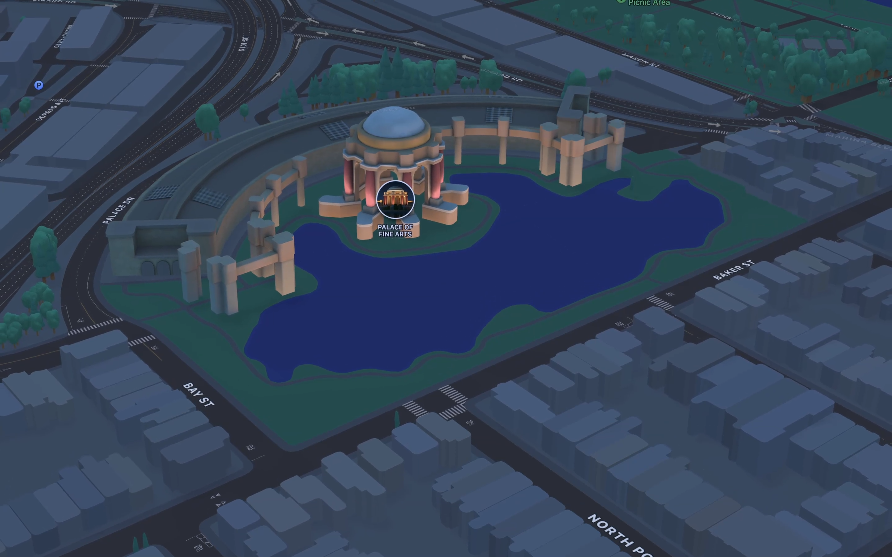
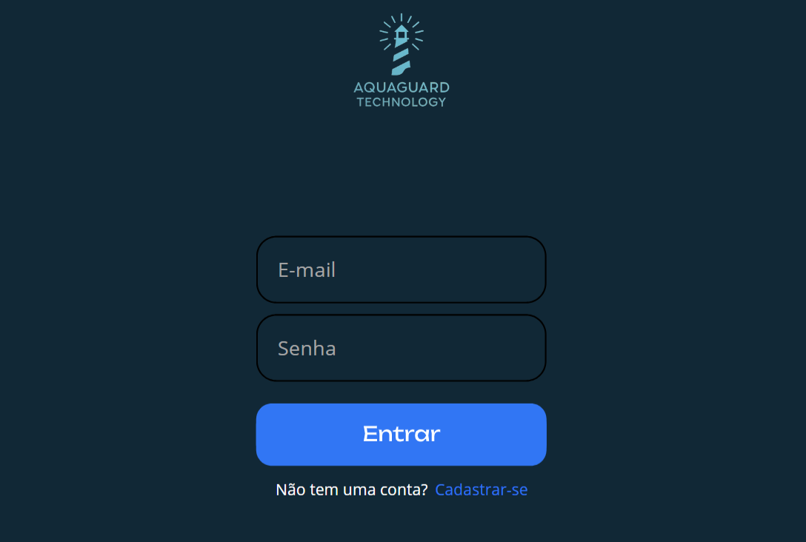
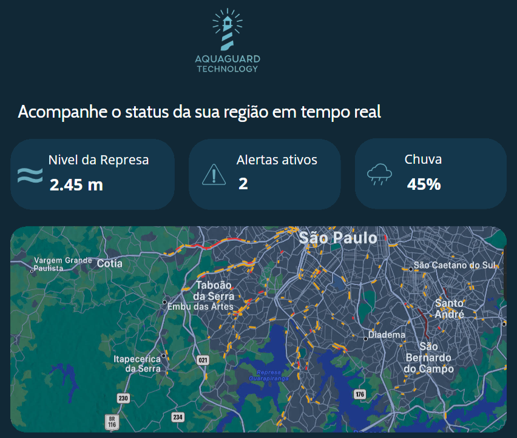
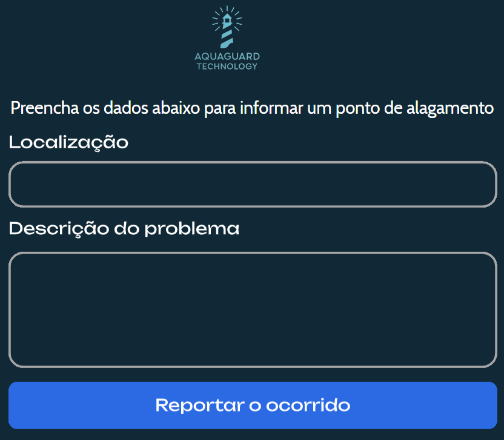
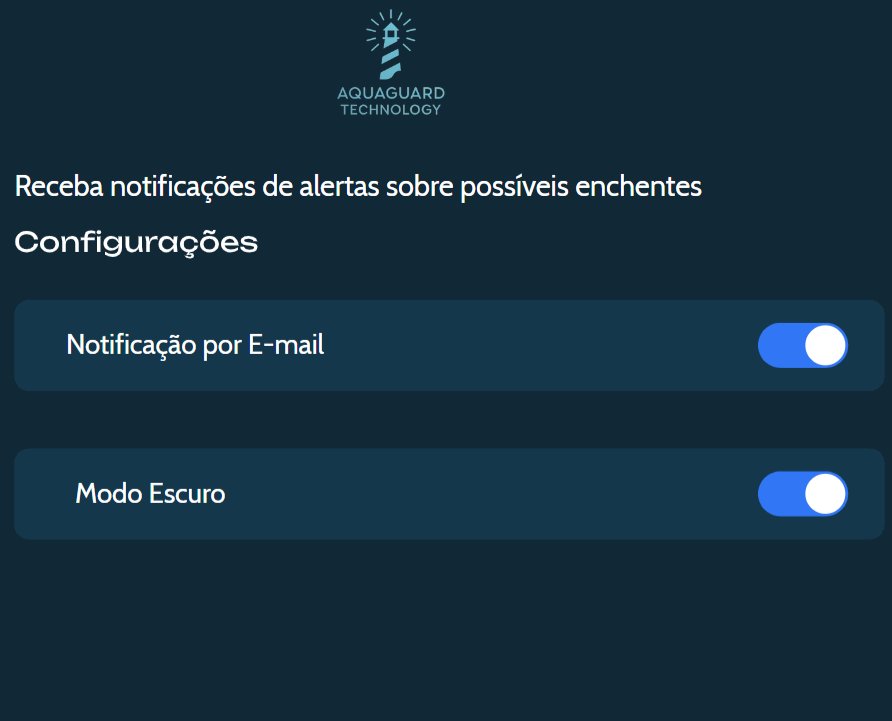

Enchentes não dão aviso. Nós sim.
Monitore zonas de risco, receba alertas e proteja quem você ama. Tecnologia que salva vidas.
Comece Agora
O Problema
Cidades inteiras sofrem com alagamentos. Perdas, destruição, medo. E o pior? Sem aviso.
Milhares de famílias vivem em risco, sem acesso a informações que poderiam evitar tragédias.

Está na hora de mudar isso, então, criamos o AquaGuard Monitor, uma plataforma inteligente que alerta moradores sobre riscos de enchentes em tempo real.
Tecnologias Utilizadas

Dados de ponta
Monitoramento em tempo real dos níveis dos rios.

Alertas personalizados
Alertas visuais sobre riscos de enchentes na sua região.

Mapa Interativo
Visualização clara das zonas de risco na plataforma.

Denúncia comunitária
Usuários ajudam a mapear pontos de alagamento.
Objetivos da Solução
Proteger vidas, evitar prejuízos e oferecer informações em tempo real sobre enchentes e riscos ambientais.

Com o AquaGuard Monitor, você tem acesso a dados precisos e atualizados,
permitindo que você tome decisões informadas para proteger sua família e sua comunidade.
Público-Alvo
Nosso sistema é voltado para três grupos principais:

Cidadãos
Moradores de áreas de risco.
Recebem alertas e monitoram sua região.

Empresas
Empresas interressadas em segurança.
Protegem seu patrimônio com informações em tempo real.
Órgãos Públicos
Orgões públicos e defesa cívil.
Utilizam dados para planejamento e resposta a emergências.
Benefícios
🚨 Alertas
Antecipação de riscos.
🌍 Mapas Interativos
Visualização de zonas de risco.
📈 Histórico
Acompanhamento de eventos passados.
🤝 Comunidade
Monitoramento colaborativo.
Como Funciona
Cadastro

O usuário cria seu cadastro no nosso site.
Monitoramento

Acompanha nível dos rios e alertas no mapa.
Reporte

Registra ocorrências na sua região.
Configuração

Define suas preferências de alertas.